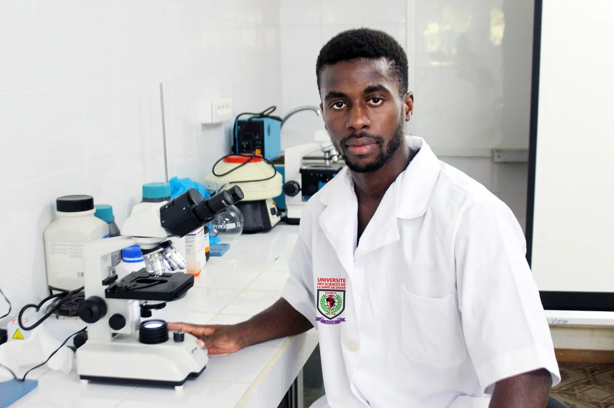
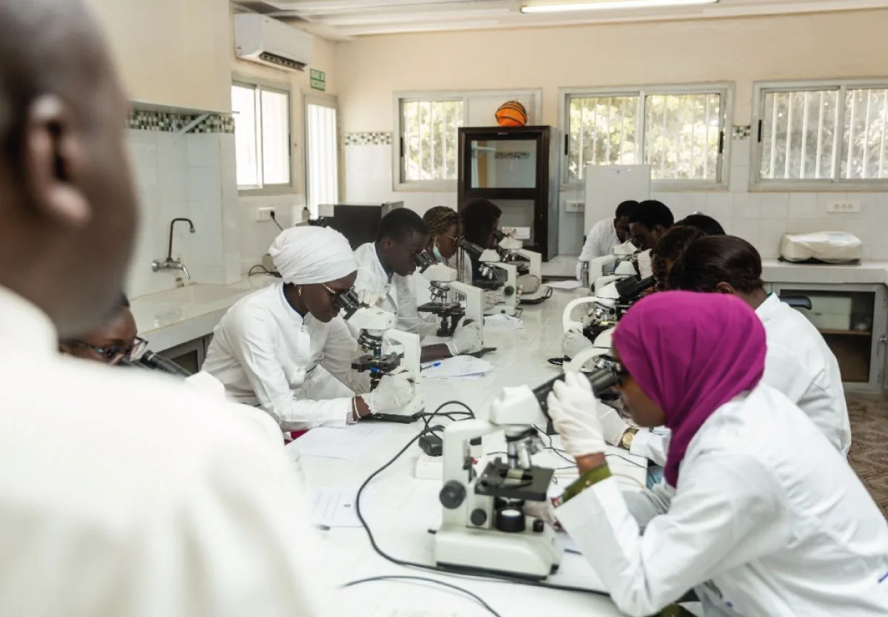

Formations
Deux diplômes d'État, une même exigence
Les deux cursus de l'USSD sont structurés selon l'architecture LMD (Licence — Master — Doctorat) et associent enseignement théorique, travaux pratiques et immersion en milieu professionnel.
Cursus · 8 ans
Diplôme d'État de Docteur en Médecine
Former des médecins compétents et éthiques. Le cursus associe des enseignements théoriques rigoureux, des travaux pratiques et des stages hospitaliers immersifs dès les premières années.
- 1Licence
Sciences fondamentales
Anatomie, biologie cellulaire, biophysique, chimie.
- 2Licence
Physiologie & sémiologie
Premier contact avec le patient et le vocabulaire clinique.
Hôpital - 3Licence
Pathologies & pharmacologie
Grands appareils et mécanismes de la maladie.
Hôpital - 4Master
Clinique médicale
Spécialités médicales, démarche diagnostique, thérapeutique.
Hôpital - 5Master
Clinique chirurgicale
Chirurgie, urgences, gynécologie-obstétrique, pédiatrie.
Hôpital - 6Master
Santé publique & terrain
Épidémiologie, médecine communautaire, stages en région.
Hôpital - 7Doctorat
Internat
Responsabilité progressive auprès des patients, sous supervision.
Hôpital - 8Doctorat
Thèse d'exercice
Recherche et soutenance. Délivrance du diplôme d'État.
Hôpital
Débouchés
Exercer
Médecine générale en cabinet, en structure hospitalière publique ou privée, en poste de santé communautaire.
Poursuite d'études
Se spécialiser
Accès aux formations de spécialisation (DES) et aux diplômes universitaires après le diplôme d'État.
Recherche
Chercher
Santé publique, épidémiologie, recherche clinique en lien avec les structures hospitalières partenaires.
Cursus · 6 ans
Diplôme d'État de Docteur en Pharmacie
Former des pharmaciens responsables et engagés pour la santé publique. Le cursus combine théorie, pratique en laboratoire, stages hospitaliers et officinaux pour maîtriser tous les aspects du médicament et de la biologie.
- 1Licence
Sciences du médicament
Chimie, physique, biologie, mathématiques appliquées.
- 2Licence
Chimie analytique & galénique
Formulation, contrôle qualité, travaux pratiques.
Laboratoire - 3Licence
Pharmacologie & microbiologie
Mécanismes d'action, interactions, agents infectieux.
Laboratoire - 4Master
Biologie médicale
Hématologie, biochimie clinique, immunologie, parasitologie.
Hôpital - 5Master
Pharmacie clinique & officine
Dispensation, suivi thérapeutique, santé publique du médicament.
Officine - 6Doctorat
Thèse d'exercice
Stage professionnel long, mémoire de recherche et soutenance.
Hôpital


Débouchés
Officine
Exercice en pharmacie d'officine, dispensation et conseil au patient, gestion du médicament.
Débouchés
Biologie médicale
Laboratoires d'analyses, pharmacie hospitalière, contrôle qualité et vigilance sanitaire.
Débouchés
Industrie & santé publique
Production et distribution pharmaceutiques, affaires réglementaires, programmes de santé.
Formation continue
DU et DES en Médecine et Pharmacie
L'offre de formation continue destinée aux professionnels en exercice est en cours de publication. Pour connaître les sessions ouvertes cette année, écrivez au service de la scolarité.

Le cursus vous convient ?
Les candidatures sont ouvertes du 30 juin au 15 septembre, toutes nationalités.